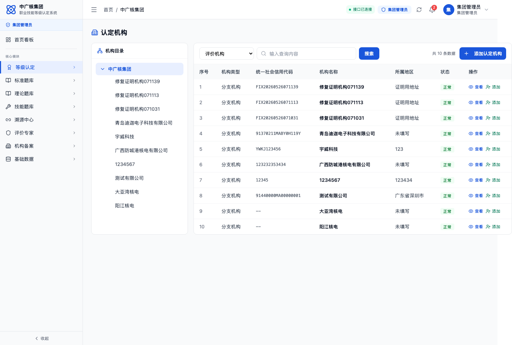
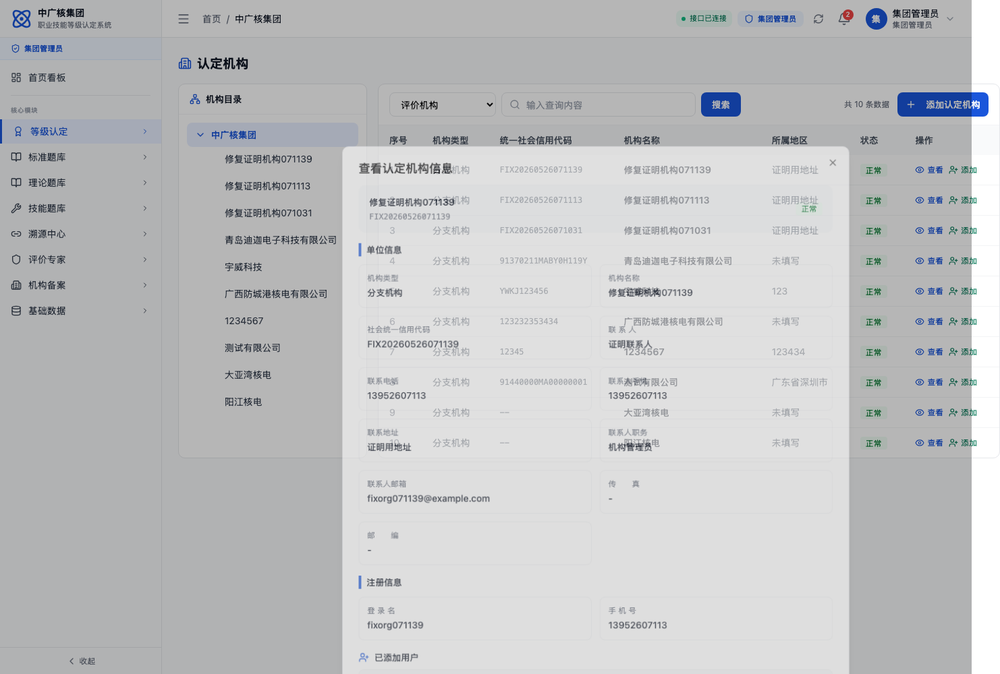
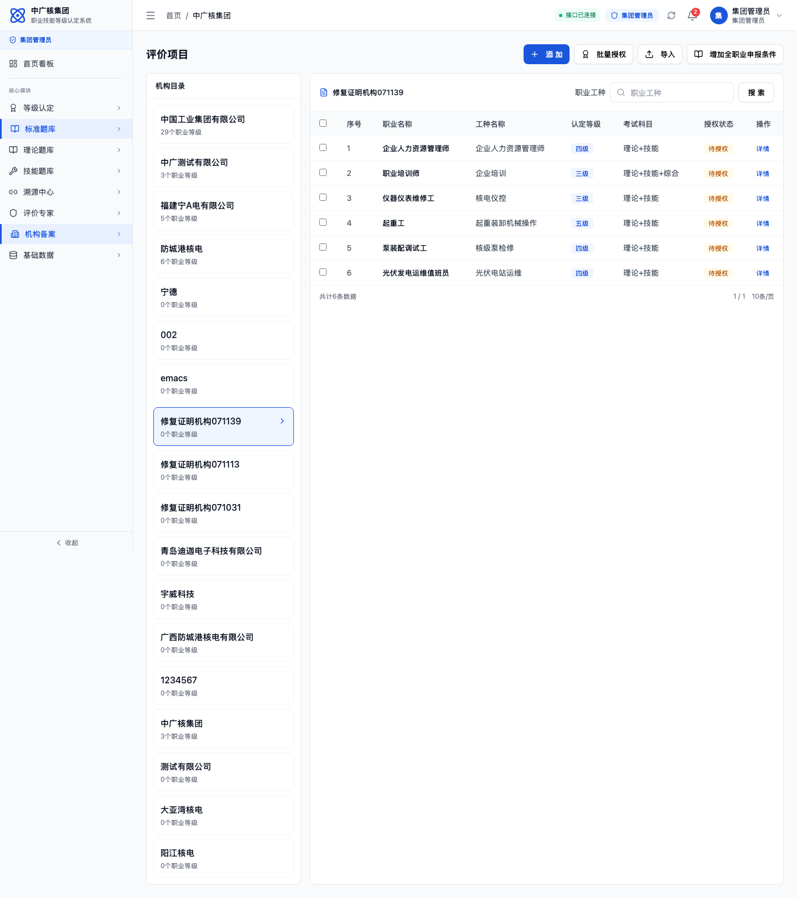
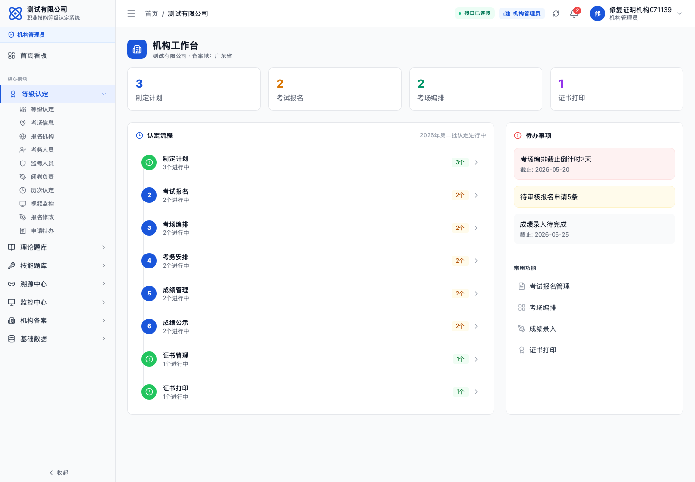

本证明基于公网环境 http://106.12.6.24:29527 生成，已通过真实 API 创建新机构并使用新账号完成登录。
生成时间2026/5/26 15:11:43
证明机构修复证明机构071139
登录账号
fixorg071139登录密码
Fix@071139创建接口
POST /api/certification/organizations登录验证
POST /api/auth/login → 200 / branch_admin修复 1：管理员新增认定机构时，后端同步创建或更新该机构的机构管理员账号。
修复 2：新建账号使用新增表单中填写的密码；历史已存在机构若只有登录名无账号，读取机构列表/详情时自动补账号，默认密码为登录名后六位。
修复 3：评价范围机构目录改为读取认定机构列表，新分支机构会出现在目录中，并可基于集团评价范围批量授权。
1. 新增认定机构后列表出现新分支机构

2. 机构详情显示注册登录名和已添加用户

3. 评价范围机构目录出现新分支机构，可进入授权职业范围

4. 新创建账号通过真实登录流程进入分支机构工作台
